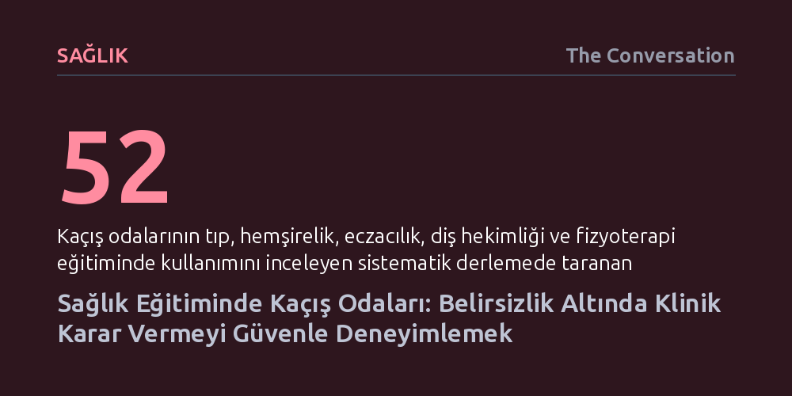

SAGLIK · The Conversation · 2026-10-13
Kaçış odası simülasyonları, sağlık öğrencilerinin eksik bilgilerle karar alıp zarar vermeden hata yapabildiği güvenli bir klinik muhakeme alanı sunuyor. Bu düşük maliyetli yöntem, pahalı teknolojilere ihtiyaç duymadan öğrencilerin karar alma ve deneyim sonrası değerlendirme becerilerini geliştiriyor.
Tıbbi hata riskini sıfırlayan basit oyun kurgularının, pahalı simülasyonlara gerek kalmadan sağlık çalışanlarının kriz anındaki karar verme ve hatalardan ders çıkarma reflekslerini geliştirebileceğini gösteriyor.

Sağlık eğitiminde öğrenciler anatomi, fizyoloji ve mesleki etik standartlarını kusursuz biçimde öğrenebilir. Ancak mesleğe adım attıklarında karşılarına çıkan gerçek insanlar, ders kitaplarındaki düzenli vaka örneklerine nadiren benzer. Klinik ortamlar; verilerin sürekli değiştiği, önceliklerin birbiriyle çatıştığı ve hekim ya da terapistlerin ihtiyaç duydukları tüm bilgilere sahip olamadan kritik kararlar almak zorunda kaldığı yüksek baskılı alanlardır.
Bu nedenle sağlık profesyonellerinin salt teorik bilginin ötesine geçmesi gerekir. Gelişen duruma göre bilgiyi uyarlamak, hastanın beklenmeyen önceliklerini hesaba katmak ve gerektiğinde başlangıçtaki varsayımları tamamen terk etmek mesleki muhakemenin temelidir. Asıl pedagojik zorluk, öğrencilerin aldıkları yanlış bir kararla gerçek bir insana zarar vermeden önce bu belirsizlik ve baskıyı nasıl tecrübe edecekleridir.
Bu ikilemi aşmak için geliştirilen kaçış odası simülasyonu, pahalı sanal gerçeklik sistemleri veya karmaşık simülasyon mankenleri yerine son derece yalın araçlarla çalışıyor: simüle edilmiş acil servis notları, ipuçları, bir senaryo ve bir alarm butonu. Üçer kişilik ekipler halinde çalışan ergoterapi öğrencileri, dağınık dosya notlarını inceleyerek hangi bilginin kritik olduğuna karar vermek, parçalar arasında bağlantı kurmak ve hastanın bir sonraki bakım adımını belirlemek zorunda kalıyor.
Sistemin temel felsefesi bilgiyi test eden çoktan seçmeli soruları asma kilitlerin arkasına gizlemek değil; belirsizliği bizzat oyunun mekaniği haline getirmektir. Öğrencilere hangi verinin önemli olduğu önceden söylenmez. Ekipteki birinin önemsiz görüp elediği bir ayrıntıyı diğeri fark edebilir; bu durum farklı yorumları dinlemeyi ve uzlaşmayı zorunlu kılar. Yanlış bir akıl yürütmeyle butona basıldığında çalan alarm öğrencilere hata yaptıklarını bildirir; ancak bu hata gerçek bir hastanın sağlığını riske atmadan yeniden deneme fırsatı sunar.
Kaçış odası kurgusunda öğrenme süreci odadan çıkılmasıyla son bulmuyor. Yöntemin en kritik pedagojik kazanımı, oyunun hemen ardından yürütülen değerlendirme ve yansıtma oturumunda ortaya çıkıyor. Öğrenciler neden belirli kararları aldıklarını, hangi ipuçlarını gözden kaçırdıklarını ve ekip arkadaşlarının sunduğu bakış açılarının kendi zihinsel modellerini nasıl dönüştürdüğünü bu aşamada tartışıyor.
Klinik muhakeme oyunları üzerine yapılan bilimsel incelemeler, bu tür eğitim araçlarının genellikle bilgi toplama ve karar verme aşamasına odaklandığını, ancak kararlar üzerine geriye dönük düşünme (yansıtma) evresini sıklıkla ihmal ettiğini gösteriyor. Oysa mesleki yeterlilik standartları, terapistlerin yalnızca doğru sonuca ulaşmasını değil, kendi klinik kararlarını ve muhakeme biçimlerini sürekli sorgulamasını talep eder. Oyun sonrası tartışmalar, cevabın doğruluğundan ziyade o karara hangi zihinsel yolla ulaşıldığını açığa çıkarır.
Kaçış odaları ve oyun tabanlı modeller tıp, hemşirelik, eczacılık, diş hekimliği ve fizyoterapi gibi birçok alanda giderek yaygınlaşıyor. Araştırmalar bu yaklaşımların öğrencilerin motivasyonunu ve derse katılımını belirgin şekilde artırdığını gösterse de, geleneksel amfi derslerine kıyasla kesin olarak daha üstün öğrenme çıktıları sağladığına dair kanıtlar henüz tam anlamıyla olgunlaşmış değil. Mevcut literatürdeki birçok çalışmanın sağlam kontrol gruplarından yoksun olması, daha metodolojik araştırmalara ihtiyaç olduğunu ortaya koyuyor.
Nihayetinde hiçbir kaçış odası, kanlı canlı bir insanın sorumluluğunu taşımanın getirdiği gerçek psikolojik baskıyı ve karmaşıklığı bütünüyle taklit edemez. Buna karşın yöntem, hiçbir ders kitabının tek başına öğretemeyeceği hayati bir deneyim kazandırır: Bilginin eksik ve cevabın belirsiz olduğu anlarda hata yapma özgürlüğüyle muhakeme yürütmek ve akıl yürütmeyi baştan kurabilmek.